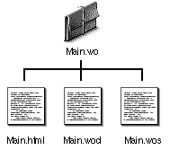
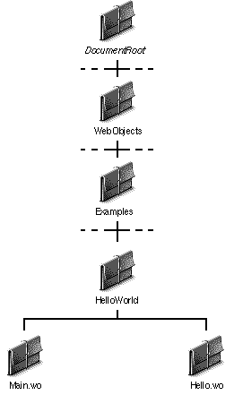

Table of Contents
Table of Contents
 Previous Section
Previous Section
Table of Contents
Previous Section
A typical WebObjects application contains the following ingredients:
WebObjects provides the classes and the DefaultApp. After installing the WebObjects package, they're ready to go.
You provide the components.
Components are the part of a WebObjects application that you write. Each component is a collection of files that defines the content, presentation, and behavior of a page. Components are comprised of three files:
The files of a component are organized in a component directory. The name of the directory has the same base name as the name of the component, but it has the extension .wo. For example, the Hello World example has a component named Main and a corresponding component directory named Main.wo.
The template, script, and declarations files in the component directory also have the same base name, and each file type has its own extension. Template files have the extension .html, declarations have the extension .wod, and scripts have the extension .wos. Thus, the Main component has the files Main.html, Main.wos, and Main.wod.

Figure 3 The Contents of a Component Directory
Generally, you put the components of a WebObjects application in a directory with the same name as the application. For example, the Hello World example has a corresponding directory named HelloWorld that contains its component directories.
WebObjects application directories such as the HelloWorld directory can go anywhere under the <DocumentRoot>/WebObjects directory. You can create application directories immediately under <DocumentRoot>/WebObjects, or you can create hierarchies of directories within <DocumentRoot>/WebObjects to organize application directories however you wish.
As shown in Figure 6, the Hello World application directory is located in <DocumentRoot>/WebObjects/Examples.
Reusable WebObjects components used by multiple applications aren't usually kept in application directories. Rather, they are located directly under <DocumentRoot>/WebObjects so they can be accessed by all the applications that use them.

Where WebObjects Components Go
 Next Section
Next Section